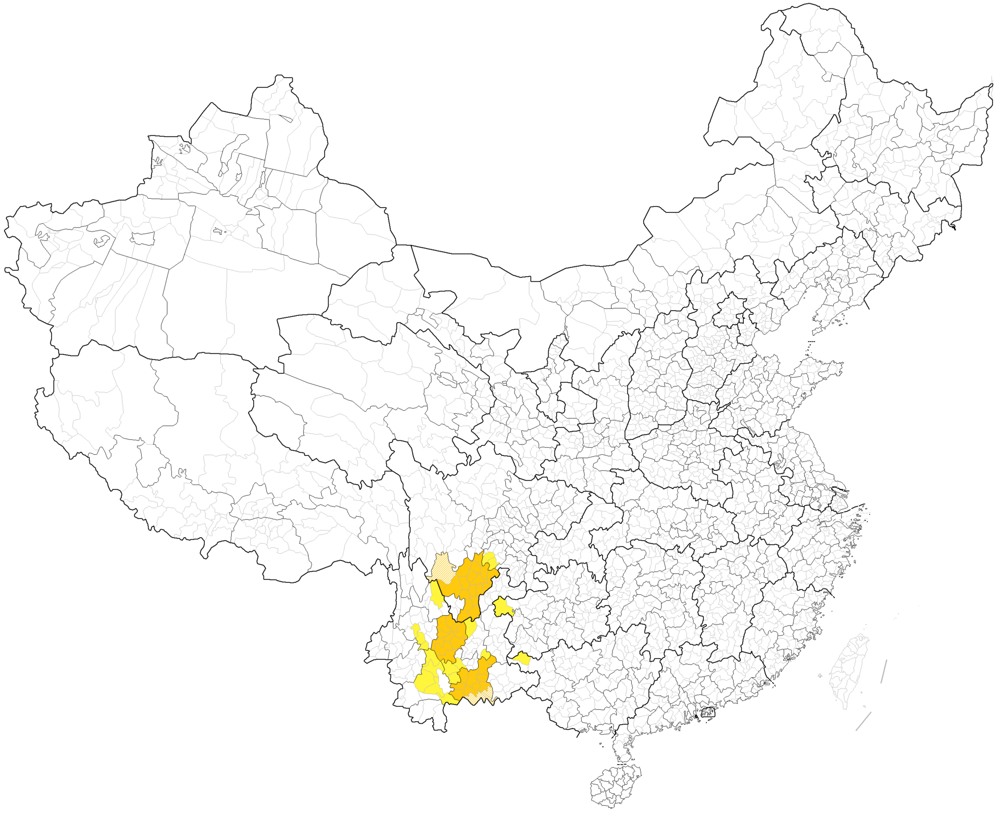
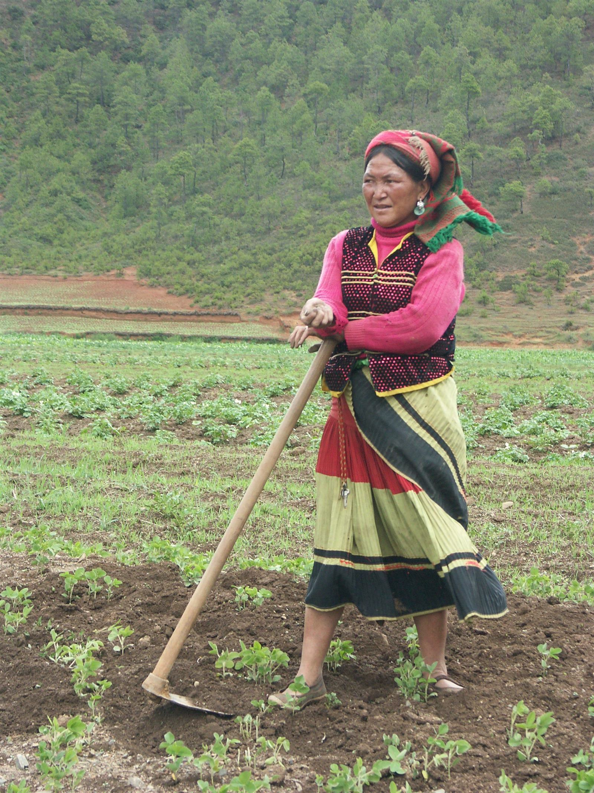
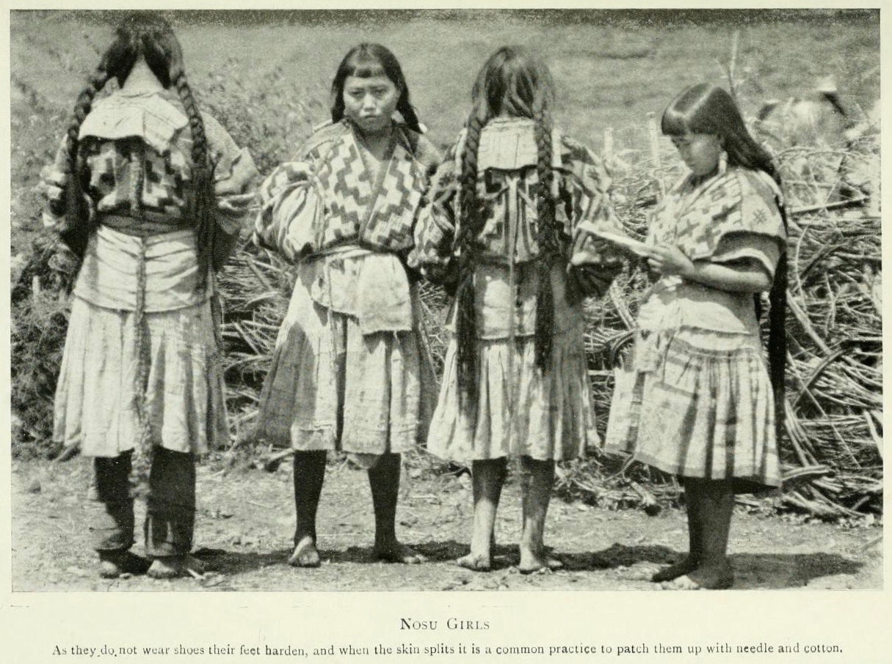
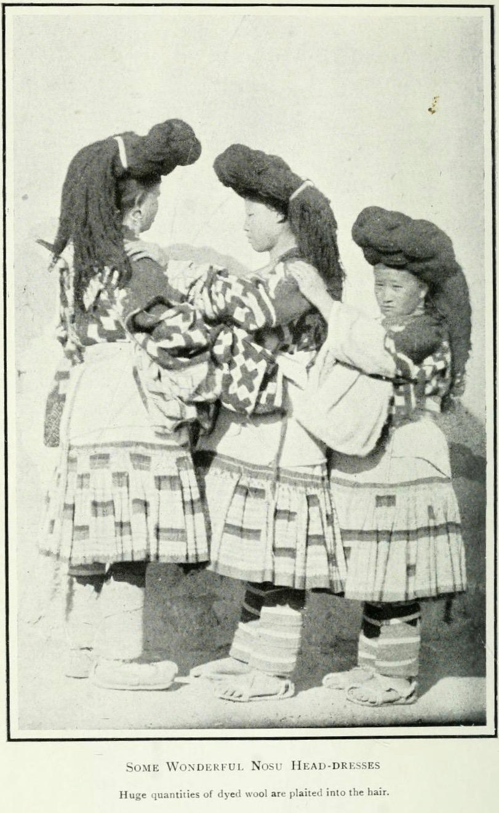

毕摩 识彝文 · 掌典籍
由元明时期的「奚婆」演变而来的宗教职事者：识彝文、通经书，主持做斋、祭祖、指路、驱鬼、占卜、治病等仪式，地位崇高，一般父子或师徒相传。
很多人以为丽江是「纳西族的城市」，但按第七次人口普查，彝族（24.07 万）是丽江第一大少数民族。云南小凉山指金沙江以西的华坪、永胜、宁蒗三县，居民普遍认为当地彝族是近一两百年间从四川大凉山迁来，故相对称「小凉山」。宁蒗彝族自治县 1956 年 9 月 20 日成立，彝、普米、纳西（摩梭）、傈僳等 12 个民族聚居，1958 年民主改革后「从原始共耕制、奴隶制、封建领主制并存直接过渡到社会主义社会」——史称「一步跨千年」。
学界普遍认为宁蒗彝族为清代中期以来陆续自大凉山迁入；其直系祖先可溯至约两千年前进入凉山的古候、曲涅两大原始部落。



农历六月二十四日，彝语称「都则」（祭火），又称星回节。点火把驱虫祈丰、祭祖；白天斗牛、斗羊、赛马、摔跤，姑娘持黄伞演「朵洛荷」——这是彝族最盛大的节日，纳西、白、傈僳等彝语支民族同过此节。




注：口弦、漆器、克智、毕摩音乐、彝族传统建筑营造技艺等国家级非遗的申报单位均在四川（布拖、喜德、美姑等）——本馆遵循「民族共有、属地申报」原则如实标注，小凉山与凉山同源共俗。